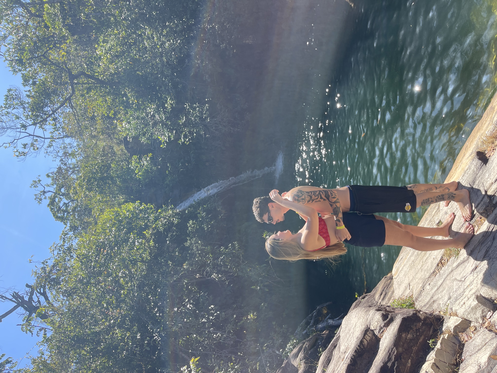
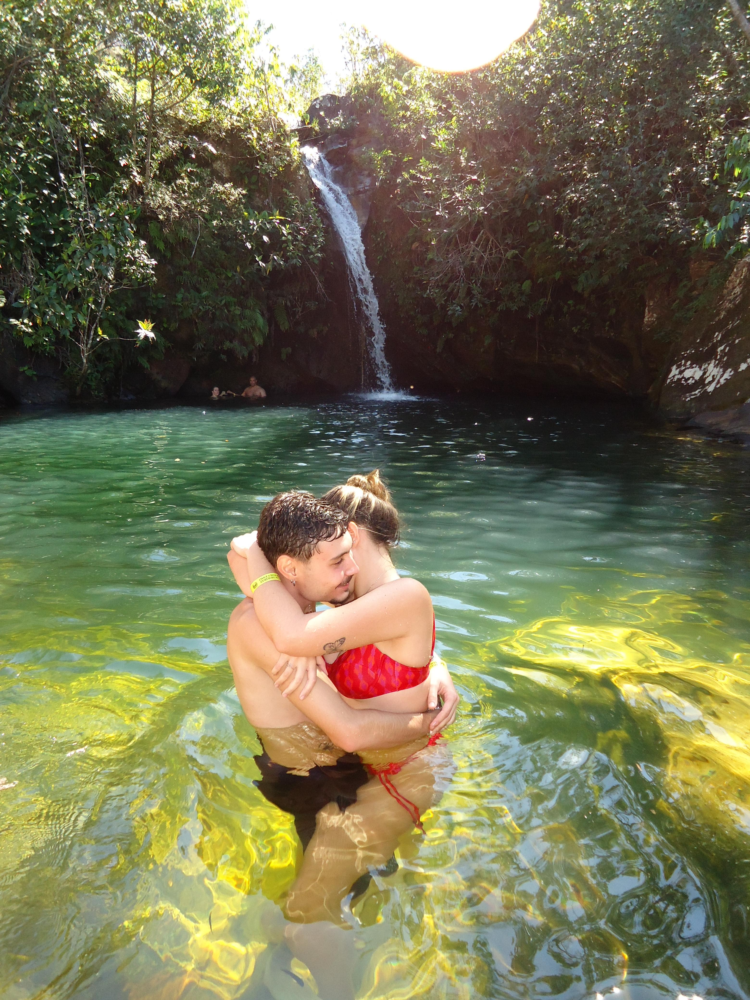
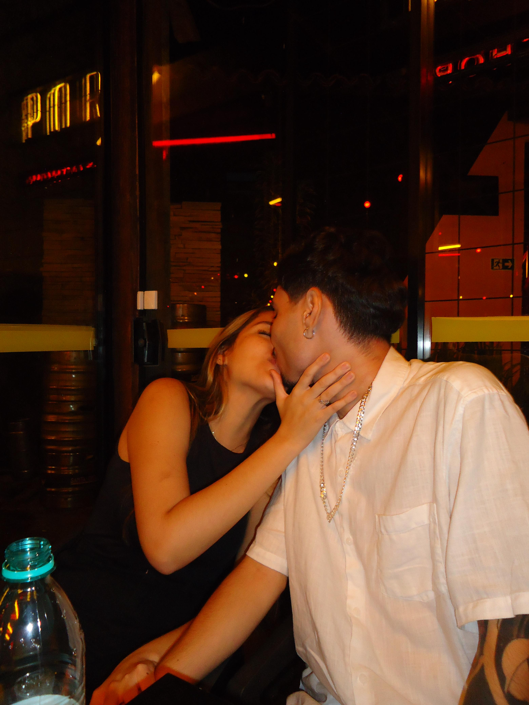
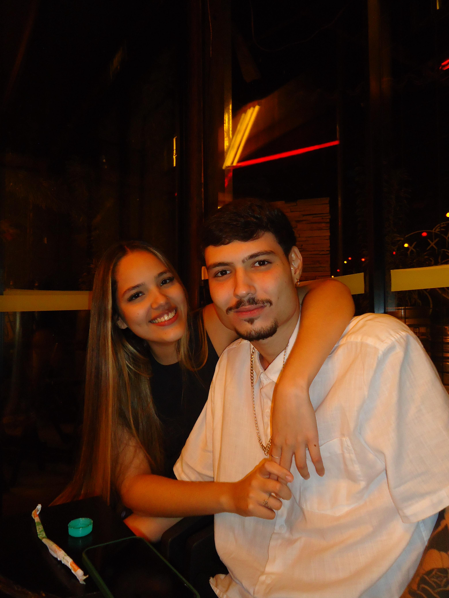
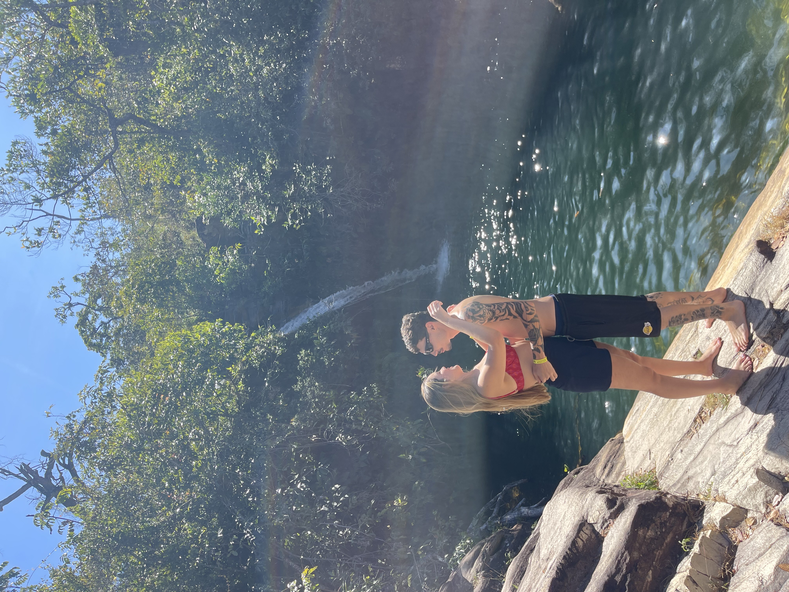
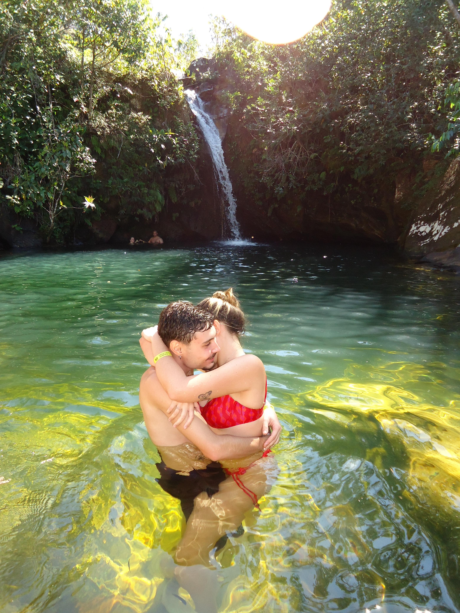
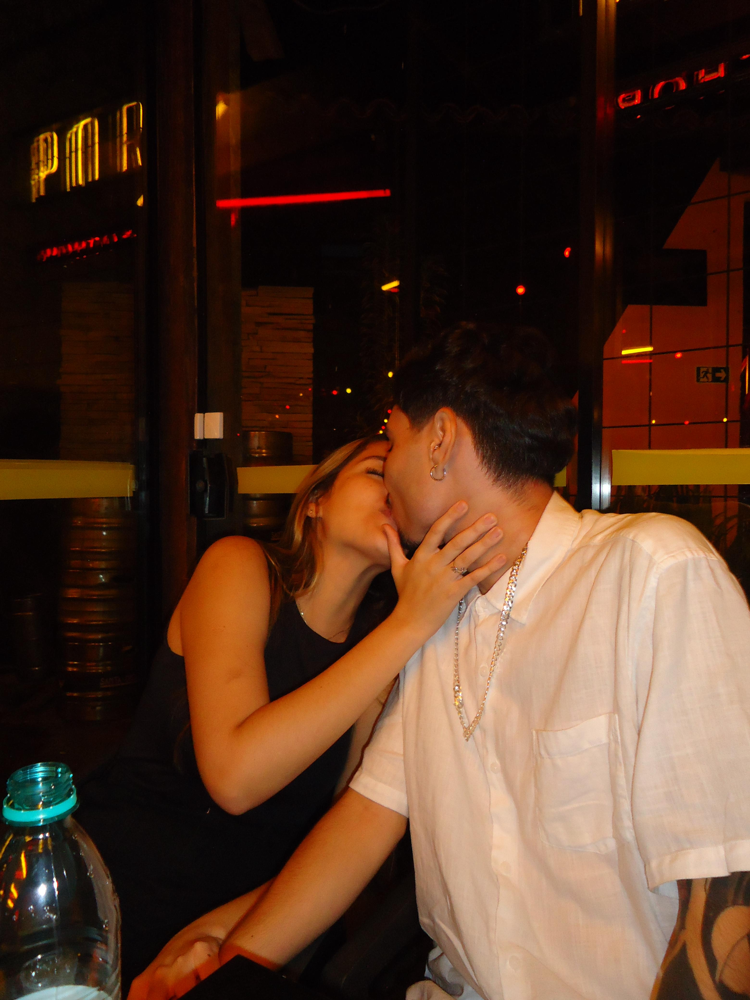
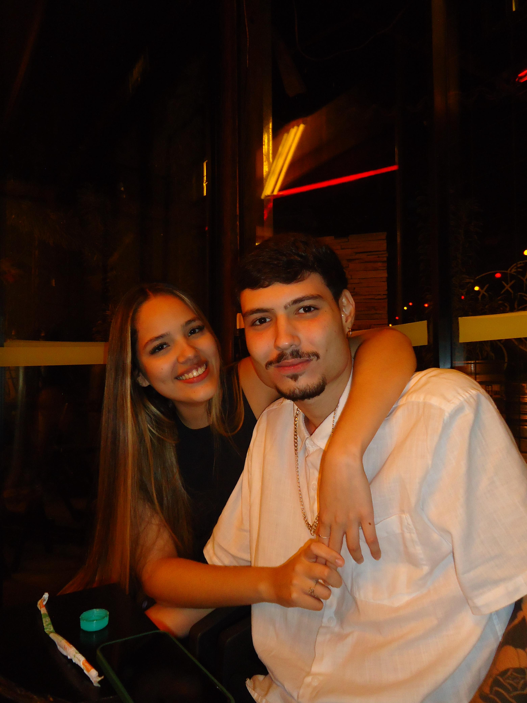

Palavras do Coração 💌
Catarina, desde que te conheci, tudo ficou mais leve, mais bonito, mais doce.
Você é a minha alegria diária e meu porto seguro.
Eu sou grato por cada segundo ao seu lado.
Te amo hoje, amanhã e sempre.
Que esse amor continue crescendo, superando desafios e enchendo nosso mundo de esperança e carinho.
Obrigado por ser exatamente quem você é: incrível, sensível, porquinha, linda.
Declaração do Meu Coração 💖
Primeiro de tudo, valeu. Sério mesmo, obrigado por estar comigo, mesmo com todas as aderências que carrego nessa vida meio torta. Sei que não sou o cara mais fácil, nem o mais estável, mas você tá aqui. E isso vale mais que tudo.
Quando você chegou, eu nem queria me envolver com ninguém. Relacionamento novo? Passava longe da minha cabeça. Eu tava só no meu canto, no meu mundinho... Aí pá, você entrou e bagunçou tudo. No melhor sentido possível. Você é algo que eu nunca imaginei acontecendo na minha vida, e olha... ainda tô tentando entender como tive essa sorte.
E seja lá o que o futuro decidir pra nós, só o fato de ter você na minha vida já é algo que eu vou agradecer pra sempre. Você me transformou, me deu paz, bagunçou minha mente e arrumou meu coração.
Tô feliz com você. Tipo, feliz de verdade. Você é linda, gostosa, perfeita, inteligente, fofa, engraçada, porquinha (do jeitinho mais fofo do mundo kkk). E mano, como é que pode a gente ter tanto gosto em comum? É tipo conexão real mesmo. Até dor de crescimento nós temos junto kkkkk. Só o lance do churrasco que não bate, né? Você pira e eu sou do contra, mas tudo certo.
E ó... eu quero uma família com você. Quero construir algo real. Saber que você pensa igual sobre filhos me deixa com o coração quentinho. Ter uma família contigo seria um dos maiores sonhos da minha vida realizado.
Nunca vou conseguir te agradecer o suficiente por realizar aquela viagem que eu sempre sonhei. Você fez isso por mim. E isso, minha gata, eu vou levar comigo pra sempre. Fico em dívida eterna contigo por isso, por me deixar feliz, por me fazer rir à toa, por fazer eu ver a vida com outros olhos, sair do piloto automático e acreditar que mereço viver coisas boas.
Você é minha prioridade. Mesmo com minha vida toda zoada, minha simplicidade, pouco dinheiro, sem carro com som, mesmo não sendo playboy e nem tendo um pug. Eu tô aqui, firme, pro que você precisar. Pra qualquer parada, qualquer situação.
E sim... tô só esperando o dia que você quiser casar comigo e morar junto. Porque, pra mim, já tô pronto. Tipo, prontíssimo. Mas eu entendo, você ainda tem que dar satisfação pros seus pais, né? Vai abrir mão de fazer unha, arrumar o cabelo, pra dividir conta com um fudido como eu kkkkk. Mas ó, se tu topar, eu tô aqui de braços abertos, e coração escancarado.
Quero aproveitar também pra pedir desculpa... por fumar, por beber de vez em quando, por ter esse passado meio zoado. Eu sei que não sou perfeito, e que às vezes posso até assustar, mas tô tentando sempre ser alguém melhor por você. Por nós.
Mesmo que às vezes eu não entenda tudo o que você faz ou sente, uma coisa é certa: você já é da minha vida, da minha família. Ganhou um cara cheio de problema, um cachorro peludo e um magrelo desajeitado, mas cheio de amor.
Aliás, a gente quer saber: quando é que você vai parar de falar que é tia deles e assumir que é mãe? Tamo só no aguardo, hein kkkk.
Era pra ser só um fluxo... só uma curtição. Mas olha a gente aqui. E eu, te esperando pra morar comigo, dividir vida, colher e tudo mais, sem julgamento, só amor.
Te amo, Infinito Para sempre!
 






